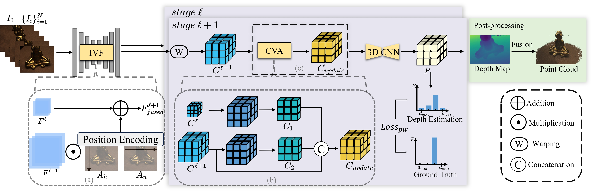
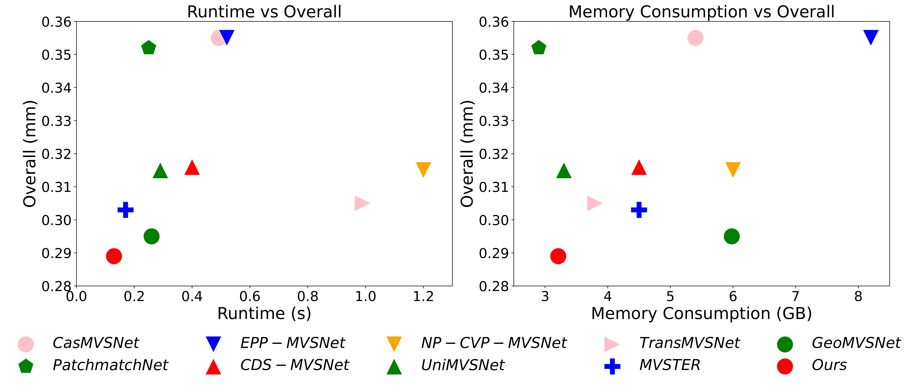
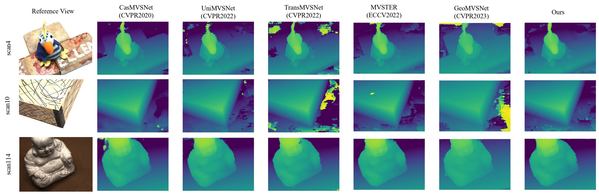

Abstract
Multi-view Stereo (MVS) aims to estimate depth and reconstruct 3D point clouds from a series of overlapping images. Recent learning-based MVS frameworks overlook the geometric information embedded in features and correlations, leading to weak cost matching. In this paper, we propose ICG-MVSNet, which explicitly integrates intra-view and cross-view relationships for depth estimation. Specifically, we develop an intra-view feature fusion module that leverages the feature coordinate correlations within a single image to enhance robust cost matching. Additionally, we introduce a lightweight cross-view aggregation module that efficiently utilizes the contextual information from volume correlations to guide regularization. Our method is evaluated on the DTU dataset and Tanks and Temples benchmark, consistently achieving competitive performance against state-of-the-art works, while requiring lower computational resources.
Pipeline

The overall architecture. Our method is a coarse-to-fine framework that estimates depths from low resolution stage ℓ to high resolution stage ℓ+1, where ℓ = 0, 1, 2, resulting in a total of 4 stages. Features of reference and source images are extracted by a feature pyramid network with the help of IVF, whose details are illustrated in (a). The source image features are warped into the D frustum planes of the reference camera and an element-wise multiplication is used to correlate each source image with the reference image. These correlations are aggregated into a single cost volume C. In finer stages, namely stage 1, 2, and 3, both current and previous stage correlations are used in CVA, whereas in stage 0, the cost volume is not updated due to the absence of contextual correlations from a previous stage. Details of this process are illustrated in (b) and (c). Regularization with 3D CNNs yields the probability volume P, from which the depth hypothesis with the highest probability is selected for the final depth map. Depth maps from multiple viewpoints are fused into a point cloud in a non-learnable process.

Comparison with state-of-the-art methods in runtime and GPU consumption on DTU.

Qualitative comparison with other methods on DTU.

Point clouds reconstructed from DTU dataset.

Point clouds reconstructed from Tanks and Temples dataset.
Quantitative Results
DTU
Quantitative comparison on DTU. * means MVSTER is trained on full-resolution images. The colors indicate rankings: red represents the best result, orange the second best, and yellow the third best.
| Type | Method | Acc. ↓ (mm) |
Comp. ↓ (mm) |
Overall ↓ (mm) |
Time ↓ (s) |
GPU ↓ (GB) |
|---|---|---|---|---|---|---|
| Traditional | Gipuma | 0.283 | 0.873 | 0.578 | - | - |
| COLMAP | 0.400 | 0.664 | 0.532 | - | - | |
| Learning-based | R-MVSNet | 0.383 | 0.452 | 0.417 | - | - |
| CasMVSNet | 0.325 | 0.385 | 0.355 | 0.49 | 5.4 | |
| CVP-MVSNet | 0.296 | 0.406 | 0.351 | - | - | |
| PatchmatchNet | 0.427 | 0.277 | 0.352 | 0.25 | 2.9 | |
| EPP-MVSNet | 0.413 | 0.296 | 0.355 | 0.52 | 8.2 | |
| CDS-MVSNet | 0.352 | 0.280 | 0.316 | 0.40 | 4.5 | |
| NP-CVP-MVSNet | 0.356 | 0.275 | 0.315 | 1.20 | 6.0 | |
| UniMVSNet | 0.352 | 0.278 | 0.315 | 0.29 | 3.3 | |
| TransMVSNet | 0.321 | 0.289 | 0.305 | 0.99 | 3.8 | |
| MVSTER* | 0.340 | 0.266 | 0.303 | 0.17 | 4.5 | |
| GeoMVSNet | 0.331 | 0.259 | 0.295 | 0.26 | 5.9 | |
| Ours | 0.327 | 0.251 | 0.289 | 0.13 | 3.2 |
Tanks and Temples
Quantitative comparison on Tanks and Temples. The colors indicate rankings: red represents the best result, orange the second best, and yellow the third best.
| Method | Scene | ||||||||
|---|---|---|---|---|---|---|---|---|---|
| Mean ↑ | Family | Francis | Horse | L.H. | M60 | Panther | P.G. | Train | |
| COLMAP | 42.14 | 50.41 | 22.25 | 25.63 | 56.43 | 44.83 | 46.97 | 48.53 | 42.04 |
| CasMVSNet | 56.42 | 76.36 | 58.45 | 46.20 | 55.53 | 56.11 | 54.02 | 58.17 | 46.56 |
| PatchmatchNet | 53.15 | 66.99 | 52.64 | 43.24 | 54.87 | 52.87 | 49.54 | 54.21 | 50.81 |
| UniMVSNet | 64.36 | 81.20 | 66.43 | 53.11 | 63.46 | 66.09 | 64.84 | 62.23 | 57.53 |
| TransMVSNet | 63.52 | 80.92 | 65.83 | 56.94 | 62.54 | 63.06 | 60.00 | 60.20 | 58.67 |
| MVSTER | 60.92 | 80.21 | 63.51 | 52.30 | 61.38 | 61.47 | 58.16 | 58.98 | 51.38 |
| GeoMVSNet | 65.89 | 81.64 | 67.53 | 55.78 | 68.02 | 65.49 | 67.19 | 63.27 | 58.22 |
| Ours | 65.53 | 81.73 | 68.92 | 56.59 | 66.10 | 64.86 | 64.41 | 62.33 | 59.26 |
Poster
BibTeX
@inproceedings{hu2025icg,
title={ICG-MVSNet: Learning Intra-view and Cross-view Relationships for Guidance in Multi-View Stereo},
author={Hu, Yuxi and Zhang, Jun and Zhang, Zhe and Weilharter, Rafael and Rao, Yuchen and Chen, Kuangyi and Yuan, Runze and Fraundorfer, Friedrich},
booktitle={IEEE International Conference on Multimedia and Expo (ICME)},
year={2025}
}